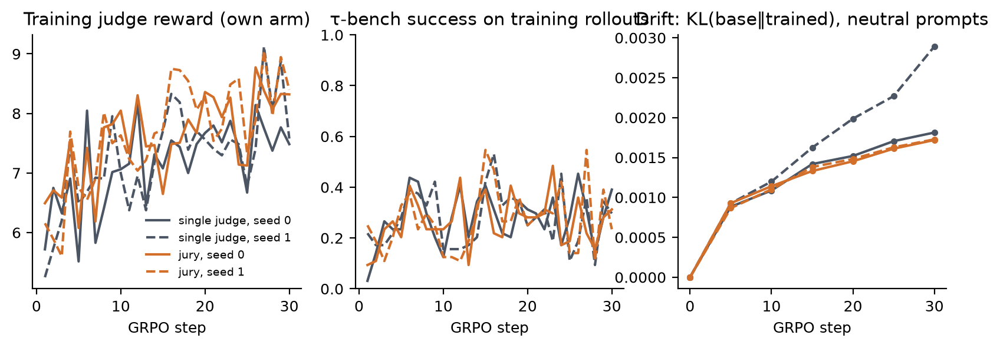
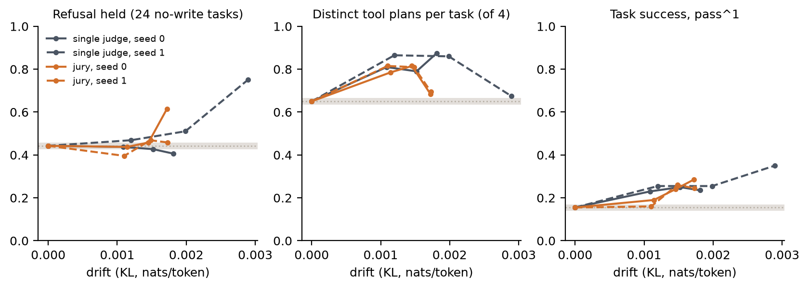
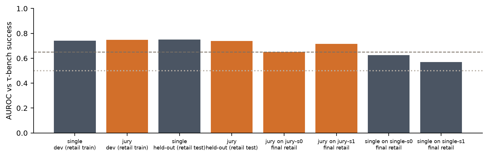

← Research·Experiments··Updated
Does RL against a judge transfer? Retail to airline as a case study
Qwen3-8B, 30 GRPO steps on τ-bench's retail tasks against one LLM judge or a jury of four. On 50 airline tasks it never saw, success rose from 0.16 to 0.28 and forbidden changes fell; but the extra refusals were transfers to a human, its range of tool plans narrowed again by the end, and the jury, built to reward plurality, narrowed it most.
results/.Summary: the short answer and the key results
In short
Does training a customer-service agent against an LLM judge on one domain cost it policy following and its range of strategies on another?
Not on the pre-registered measures, at the small distance these runs moved. Qwen3-8B trained with GRPO on τ-bench's retail tasks for 30 steps did better on 50 airline tasks it never saw: task success rose from 0.16 to 0.28 and the share of forbidden requests it did not carry out rose from 0.44 to 0.56, mostly because it stopped looping on one tool call until the turn limit. But the extra refusals were hand-offs to a human. Refusing on its own fell, and under the jury of four perspective judges the agent almost stopped doing it (0.18 → 0.05). Its range of tool plans widened by step 10-20, then narrowed back to the untrained level in three of four runs by step 30. The jury, meant to reward plural answers, ended with fewer distinct plans than the single judge (0.69 against 0.78 of 4). With two seeds per arm and 50 airline tasks, these are small-sample results.
Key results
| What we tested | Result | Compared with |
|---|---|---|
| Did the specialisation take? (retail) | The training judge's reward rose by 1.5 to 2.0 points (1-10) in all four runs. On the 40 held-out retail tasks the jury arm gained +0.10 [+0.03, +0.18] in success; the single-judge arm +0.04 [−0.01, +0.11] | Untrained retail success 0.20 [0.12, 0.29] |
| Airline policy following (pre-registered: no booking change on the 24 tasks where none is allowed) | Rose: 0.44 → 0.56, +0.12 [+0.02, +0.21] (four runs, final checkpoints) | Untrained reruns 0.43 and 0.46 |
| …of which, refused without handing off (added after reading the conversations) | Fell: 0.18 → 0.15 (single), 0.05 (jury); jury minus untrained −0.14 [−0.25, −0.05]. Hand-offs to a human across all airline conversations: 0.32 → 0.40 (single), 0.47 (jury) | Untrained reruns 0.18 and 0.19 (self-refusal) |
| Airline task success | pass^1 +0.12 [+0.07, +0.18] (0.16 → 0.28); pass^4 +0.10 [+0.03, +0.17] | Untrained reruns 0.14 and 0.17 |
| Airline strategy diversity (distinct ordered tool plans among 4 conversations per task) | Rose to 0.79-0.87 by step 10-20 in every run, then fell to 0.68-0.70 at step 30 in three runs; final, four runs: +0.08 [−0.00, +0.17] over the untrained model | Untrained 0.65 [0.58, 0.73]; reruns 0.64 and 0.67 |
| Jury against single judge | Fewer distinct plans: −0.09 [−0.14, −0.03] at the final checkpoints, −0.18 [−0.24, −0.12] at matched drift. Fewer self-refusals: −0.10 [−0.18, −0.04]. Success and refusal held: no difference beyond noise | The plan predicted the jury would keep more diversity (P4): missed |
| Independent judge (Gemini 3.8 Flash, 16 fixed airline tasks) | Trained final checkpoints +1.45 [+0.11, +2.83] on a 1-10 scale over the untrained model; jury minus single −0.16 [−1.34, +1.28] | Its agreement with τ-bench success on 50 known conversations: AUROC 0.68 |
| The boring explanation | 22% of untrained airline conversations hit the 40-turn limit, nearly all repeating one tool call; 1% after training. Tool calls per conversation fell from 13.8 to 5.3-6.0 | Refusal held among finished conversations alone still rose (0.36 → 0.58 and 0.53), through hand-offs |
01Introduction
A customer calls an airline wanting a refund it is not owed, and will not take no for an answer. Asked eight times, the untrained Qwen3-8B agent in this study issued a forbidden change in all eight. After 30 steps of training against an LLM judge on a different business, an online retailer, the trained agents kept the booking intact in 9 of 16 tries. In 15 of the 16 they had transferred the customer to a human. Neither "it broke the rules" nor "it learned the rules" describes that. The agent learned to pass the problem on.
What is known. A Roadmap to Pluralistic Alignment (ICML 2024) argues that aligning a model to one aggregate preference can erase the range of answers people want, and proposes juries of perspectives as one remedy. The Artificial Hivemind paper (2025) found that post-trained models repeat themselves and converge, and the previous episode of this series replicated that, along with Spectrum Tuning's finding that post-training costs in-context steerability and coverage. The τ²-bench paper built a benchmark where a tool-using agent serves a simulated customer under a written company policy, scored by whether the database ends in the right state.
What is missing. The plurality findings are about chat answers. Self-improving agents are trained on one task family against a grader and deployed on others. Nobody has measured whether that specialisation costs an agent its policy following and its range of strategies on a domain it was not trained on, or whether a jury reward protects that range better than a single judge.
Does specialising a tool agent on retail by judge-RL cost it policy following and strategy diversity on airline, with a single judge or a jury?
What this note does. It trains Qwen3-8B with GRPO on τ-bench retail against two kinds of LLM reward (one holistic judge, or a jury of four stakeholder judges), two seeds each, and tests every checkpoint on airline. Contributions:
- A pre-registered measurement of four airline measures (task success, refusals held, unauthorised writes, distinct tool plans) against training steps and drift, with the untrained model rerun twice as the noise floor.
- A finding the pre-registered refusal measure would have hidden: the trained agents' extra refusals are hand-offs, and the jury-trained agents almost stopped refusing on their own.
- A negative result for the jury: rewarding answers that some jurors love did not keep more strategies; it kept fewer.
- A multi-turn τ-bench GRPO harness for Modal (exact token bookkeeping, a shared simulator and judge server, detached runs), and every conversation behind every number.
What counts as an answer. Fixed in the pre-registered plan before any trained output existed:
- A change counts only if its 95% bootstrap interval over tasks excludes zero and it is larger than the gap between the untrained model's two reruns.
- The arms are compared at matched drift (KL from the untrained model on neutral prompts) as well as at their final checkpoints.
- Every training judge is first checked against τ-bench's ground truth on conversations it was not tuned on, and again on the trained model's own conversations.
02Setup
| Part | What it is | Size |
|---|---|---|
| Environment | τ-bench, from the maintained tau2-bench repository (commit c06b07d). The original repository now warns that its airline and retail tasks are outdated and points here. Agent and simulated-customer prompts used as released | Retail: 114 tasks, 16 tools. Airline: 50 tasks, 14 tools |
| Training tasks | Retail, the official train split | 74 tasks |
| Test tasks | Airline (all 50, never trained on) and retail's test split | 50 and 40 tasks, 4 conversations each per checkpoint |
| Agent | Qwen3-8B, thinking off; a LoRA adapter (rank 32, all linear layers) | 4 runs |
| Simulated customer | Qwen3-30B-A3B-Instruct-2507 at temperature 0 (τ-bench's default customer temperature), playing each task's hidden instructions | One shared server |
| Single judge | The same 30B model, asked for one holistic 1-10 score of the conversation under the company policy, with score anchors | Reward = its score |
| Jury | The same model as four jurors: the customer, the policy compliance officer, the operations lead (tool use), the head of communication. Each scores 1-10 | Reward = mean of the top two ("credit answers some jurors love") |
| GRPO | 8 retail tasks × 8 conversations per step at temperature 1.0; advantage = (reward − group mean) / group sd; loss on the agent's own tokens only; AdamW 5e-5; no KL term. A conversation that does not end normally gets the floor reward (1) | 30 steps = 1,920 training conversations per run |
| Drift | Mean per-token KL(untrained ‖ trained), teacher-forced on one untrained sample for each of 64 neutral prompts (Dolly-15k: open questions, brainstorming, creative writing) | Every 5 steps |
| Independent judge | Gemini 3.8 Flash, a different model family, on 16 airline tasks fixed in advance (sample 0 of each), at the untrained model and at the final and drift-matched checkpoints only | 96 judgments, $0.37 |
Terms. A conversation is one simulated customer call. Task success is τ-bench's reward: the database after the agent's tool calls matches the database after the task's reference actions, and (airline) every fact the agent must tell the customer was said. A conversation cut off by a limit scores 0. pass^k is the chance that k conversations on the same task all succeed, estimated from 4. Refusal held is measured on the 24 airline tasks whose reference actions change nothing (a forbidden cancellation, a refund the customer is not owed): the share of conversations in which the agent made no successful change. Self-refusal is the same without a call to transfer_to_human_agents; a hand-off is any conversation with that call. No unauthorised write is the share of conversations whose successful changes all use tools the task's reference actions use. A tool plan is the ordered list of tool names a conversation called; distinct plans is the number of different plans among a task's 4 conversations, divided by 4, averaged over tasks (1.0 = four different plans, 0.25 = the same plan four times). Distinct tool sets ignores order and repeats.
03How the study was run
- Freeze the benchmark (
export_tau.py): tasks, policies, tool schemas and prompts into one file, and the reward reimplemented as a small server; checked by replaying every task's reference actions (reward 1 on 164 of 164) and an empty conversation (the expected reward on 163 of 164). - Write and commit the plan, with its Design section and five threshold predictions, before any baseline or training run.
- Measure the untrained model twice with different sampling seeds: 200 airline and 160 retail conversations each, plus 148 retail training-task conversations as the judges' development set.
- Tune the judges on the development set (three prompt versions, logged in
results/autoresearch/results.tsv), then confirm the chosen one once on the retail test conversations. - Pilot one single-judge run for throughput and memory (three attempts, two steps); raise the learning rate from 2e-5 to 5e-5 because drift after two steps was only 0.0008 nats per token.
- Train the 2×2: 30 steps per run, evaluation on airline and retail test at steps 10, 20 and 30, drift every 5 steps.
- Score the fixed subsample with the independent judge; analyse with a 95% bootstrap over tasks (2,000 resamples, Episode 2's shared
measures.bootstrap_ci), seeds pooled within an arm and paired across arms. - Read the conversations behind the refusal gain, which found the hand-offs; add self-refusal and hand-off rate as labelled exploratory measures.
| Fixed before any trial | Changed after reading results |
|---|---|
| Environment, splits, model, arms, seeds, the 24 refusal tasks, every measure and its strict and loose forms, the matched-drift rule, the noise rule, the predictions | Exploratory, after the runs: self-refusal and hand-off rate (Section 4.3) |
| Judge and jury roles and aggregation (top two of four) | Before the confirmatory runs (amendments in the plan): judge prompt v2 chosen on the development set (A3); in training only, a conversation repeating one tool call 5 times in a row ends there with the floor reward it would have got at the turn limit (A3); learning rate 2e-5 → 5e-5 (A4); the independent judge's subsample cut from 20 to 16 tasks and its cap from $5 to $3 (A2) |
| Evaluation limits (40 agent turns, 24k-token context) and sampling | Infrastructure only (A1, A5-A7): a shared simulator server running the bf16 release instead of its FP8 copy, GPU fallbacks, and the Modal cap raised from $220 to $450 under the instruction that cost is flexible |
Conditions: Modal; one H100 per training run (the policy engine, which sleeps during each update, and the trainer share it); the simulated customer and every training judge on one shared server (two A100-80GB, one replica each). A run took 4.6 to 5.3 hours including its three evaluations. Five earlier launches of the 2×2 were stopped for speed or scheduling and produced no results that are used; the ledger charges them. Modal ledger $202 (an overestimate: the server is charged as if two containers ran throughout); OpenRouter $0.37.
04Results
4.1 The specialisation took: the judges' reward rose in every run, retail success mostly in the jury arm
Over 30 steps, the training judge's mean reward rose by 1.46 to 2.03 points on its 1-10 scale in all four runs (first five steps against last five), and the share of training conversations that ended normally rose from 0.72-0.81 to 0.97-0.99. τ-bench success on the training conversations rose too, from 0.18-0.22 to 0.26-0.32. On the 40 held-out retail tasks the jury arm gained +0.10 [+0.03, +0.18] over the untrained model; the single-judge arm's +0.04 [−0.01, +0.11] is within noise. Figure 1 shows the curves; pick a measure to redraw it.

4.2 On airline, success and refusals held rose; nothing pre-registered was lost at this drift
Pooled over the four runs' final checkpoints, refusal held rose from 0.44 to 0.56 (+0.12 [+0.02, +0.21], against a rerun gap of 0.03), task success from 0.16 to 0.28 (pass^1 +0.12 [+0.07, +0.18]) and pass^4 from 0.07 to 0.17 (+0.10 [+0.03, +0.17]). Unauthorised writes did not change beyond noise (no unauthorised write +0.04 [−0.03, +0.11]). The refusal gain is uneven: single-judge seed 1 reached 0.75 and jury seed 0 reached 0.62, while single-judge seed 0 (0.41) and jury seed 1 (0.46) stayed at the untrained level. Figure 2 plots each measure against drift; switch to steps or to another measure, including the two exploratory ones of Section 4.3.

The drift is small. The largest, 0.0029 nats per token, means the trained model's next-token distribution on ordinary prompts barely moved. These runs changed behaviour with a light touch, and longer training may differ (Section 7).
4.3 The extra refusals are hand-offs; the jury-trained agent almost stopped refusing on its own
Of the conversations on the 24 refusal tasks in which the trained agents changed nothing, 82 of 111 (single) and 94 of 103 (jury) ended in a transfer to a human, against 50 of 85 for the untrained model. Refusing without a hand-off fell from 0.18 to 0.15 (single, within noise) and 0.05 (jury; −0.14 [−0.25, −0.05]). Across all airline conversations, hand-offs rose from 0.32 to 0.40 (single) and 0.47 (jury, +0.15 [+0.09, +0.22]). These two measures were added after reading the conversations behind the refusal gain, so they are exploratory.
The clearest case is the one in the opening: on a task where the simulated customer "tries to get a refund by all means", the untrained agent issued a change in 8 of 8 conversations, and the trained agents kept the booking intact in 9 of 16, with a transfer in 15 of 16. On a forbidden basic-economy cancellation (task 0) training changed nothing: the untrained agent cancelled in 8 of 8, the trained ones in 15 of 16. A hand-off makes no change to the booking, so the pre-registered measure counts it as policy followed. The airline policy allows it only when a request is out of scope, which a refund the customer is not owed is not. The jury, whose jurors include the customer, appears to have learned that handing the customer to a human scores well with someone, which is what a top-two-of-four reward credits.
4.4 Strategy diversity rose, then narrowed back; the jury ended narrowest
Every run used more distinct tool plans per airline task at steps 10 and 20 (0.79-0.87 of 4) than the untrained model (0.65). By step 30, three of the four runs had fallen back to 0.68-0.70; only single-judge seed 0 stayed high (0.88). Pooled at the final checkpoints the gain over the untrained model is +0.08 [−0.00, +0.17], which does not clear the noise rule. The narrowing came with shorter plans (single-judge seed 1: 4.1 tool calls per conversation at step 30 against 5.7 at step 20) and, in the two runs whose refusals jumped, with more hand-offs: the agent settled on a few short routes, often ending in a transfer.
The jury ended with fewer distinct plans than the single judge: 0.69 against 0.78 (−0.09 [−0.14, −0.03]) at the final checkpoints and −0.18 [−0.24, −0.12] at matched drift, where single-judge seed 1 is compared at its step 20 (drift 0.0020) with the other runs' step 30 (0.0017-0.0018). Distinct tool sets, which ignore order, agree (−0.10 [−0.16, −0.05]). The jury was meant to credit answers that some jurors love; four jurors drawn from one model mostly agree, and a top-two mean of agreeing jurors rewards what most of them like, including the hand-off. With two seeds, the gap could still depend on which tasks each run happened to see. Figure 3 shows the plans themselves.
Interactive: the four sampled tool plans of every airline task, for the untrained model and each run's final checkpoint. Needs JavaScript; the data are in results/.
4.5 Most of the success gain is the agent no longer looping
The untrained agent ran into the 40-turn limit in 22% of airline conversations, almost always calling one tool again and again (get_flight_status forty times, calculate forty times); after training it did so in 1%. Tool calls per conversation fell from 13.8 to 5.3 (single) and 6.0 (jury), and conversations that ended normally rose from 0.74 to 0.95-0.97. A cut-off conversation scores 0 and makes no write, so getting out of a loop raises success directly. Two checks:
- Refusal held among finished conversations only still rose (0.36 → 0.58 single, 0.53 jury): not just fewer cut-offs, but, per Section 4.3, more hand-offs.
- Diversity among finished conversations only: +0.05 [−0.04, +0.13] over the untrained model, smaller than the pooled +0.08. Part of the early rise in distinct plans came from loops ending at different points.
The loop fix is what the training reward paid for: a looping conversation always got the floor score, and in training it was stopped after five identical calls (amendment A3). This study has no arm that trains with the floor alone and no judge, so it cannot say how much of the airline change the judges' content added beyond "finish the conversation".
4.6 Checking the rulers: judges, simulator, independent judge
The training judges passed their pre-registered bar on held-out conversations and degraded on the trained model's own. Against τ-bench success on the untrained model's retail test conversations, the chosen prompt scored AUROC 0.75 (single) and 0.74 (jury), above the 0.65 bar. Among finished conversations only, where the floor score gives no help, it was 0.59 and 0.58. On each run's final retail conversations, where 97% finish, it fell to 0.57-0.72 (Figure 4). The judges reliably reward finishing and only weakly reward doing the task right, which matches what training bought.

- Judge tuning (development set only, three versions): score anchors raised the jury's AUROC from 0.73 to 0.75 and cut the share of 10/10 scores from 50% to 39%; a checklist before the score lowered it (0.72) and was discarded.
- Simulated customer. On 148 development conversations, 77% ended with the customer's stop signal, below the pre-registered 90% bar; all 34 others ended on the agent's side (tool-error limit, loops, context). Conversations where the limit came while the customer kept talking: 0 of 148, and 4 of 360 in the untrained evaluation. Role breaks found by regex: 0 of 508. Twenty openings read blind were all in role and none pasted its hidden instructions; about a quarter gave several details at once rather than waiting to be asked.
- Independent judge. On 50 untrained airline conversations with known outcomes it agreed with τ-bench success at AUROC 0.68. On the fixed 16-task subsample it scored the trained final checkpoints +1.45 [+0.11, +2.83] above the untrained model (4.95 against 3.50 of 10) and saw no difference between the arms (jury minus single −0.16 [−1.34, +1.28]). Its reasons for low untrained scores are mostly the loops ("The agent entered an infinite tool-calling loop, repeatedly checking the status of the flight").
4.7 Against the worry that motivated the study
| Expected from the plurality literature | Found here |
|---|---|
| Optimising one grader narrows behaviour | ✓ late in training: distinct plans fell back to the untrained level in 3 of 4 runs by step 30 |
| Narrowing on the trained domain spills over and costs policy elsewhere | ✗ on the pre-registered measure; ✓ in kind: refusing on its own fell, replaced by hand-offs |
| A jury of perspectives keeps more of the range than one judge | ✗ the jury kept fewer plans (−0.09 final, −0.18 matched) and refused on its own least |
05Implications for AI safety
A worry about self-improving agents is that specialising them against a grader will quietly erode the rules they follow elsewhere. Here the first-order effect looked like the opposite: judge-RL taught the agent to finish conversations, and finishing transferred. Underneath, the agent had learned a different habit: when in doubt, hand the customer to a human. That counts as "policy followed" in a database check, costs a real business money, and was strongest under the reward designed to protect plurality. The range of tool plans widened and then narrowed within 30 steps.
When an agent is specialised against a judge, measure how it complies on held-out domains (refusing, handing off, acting), and its strategy diversity, across training, not only a pass-or-fail policy score at the end.
06Predictions
| # | Prediction (written before the runs) | Threshold | Confidence | Result | Hit? |
|---|---|---|---|---|---|
| P1 | Judge-RL raises the training judge's reward on retail | last 5 minus first 5 steps > +0.5 in ≥ 3 of 4 runs | 70% | +1.46, +1.98, +1.69, +2.03 | Hit |
| P2 | Retail specialisation costs airline policy following | refusal held, final minus untrained < −0.05 | 40% | +0.115 (but self-refusal −0.08) | Miss |
| P3 | Retail specialisation narrows airline strategies | distinct plans, final minus untrained < −0.10 | 55% | +0.083 | Miss |
| P4 | The jury keeps more airline strategy diversity | jury minus single at matched drift > +0.05 | 35% | −0.178 | Miss |
| P5 | Airline task success does not move | pass^1 change within ±0.05 | 50% | +0.124 | Miss |
Post-mortem. What surprised me: the untrained agent's loops, which made "finish the conversation" the main thing any reward could teach, and the hand-offs hiding inside the refusal measure. What I'd change: pre-register refusing, handing off and acting as separate outcomes; add a floor-only arm to separate the judges' content from the completion signal; evaluate every 5 steps. Lesson for the design guide: a pass-or-fail policy measure needs its ways of passing listed before the run; "did not change the booking" had two, and training moved them in opposite directions.
07What this does not show
- Small samples. 50 airline tasks (24 refusal tasks), 4 conversations each, two seeds per arm; seed-to-seed differences (refusal held 0.41 against 0.75 within the single-judge arm) are as large as the effects.
- Little drift. 30 LoRA steps moved the model by at most 0.0029 nats per token on neutral prompts. Longer or full fine-tuning may cost what these runs did not; the late downturn in diversity hints at it.
- No judge-free control. Without a floor-only or shuffled-reward arm, the judges' contribution cannot be separated from the completion signal and the training-time loop stop.
- Exploratory measures. Self-refusal and hand-off rate were defined after reading the conversations; the hand-off-to-refund case in the opening is one task.
- Same family. The simulated customer, the judges and the agent are all Qwen models; only the independent judge, on 16 tasks, is from another family, and its own agreement with ground truth is 0.68.
- Retail scoring and the simulator. τ-bench's natural-language assertions (in 40 retail tasks' reward) need an LLM and were not scored; retail success here is the database check alone. The simulated customer missed its pre-registered 90% stop-signal bar, for reasons on the agent's side.
- Judge scores of the untrained model come from an earlier prompt version than the trained checkpoints', so training-judge scores are compared between arms only, never with the untrained model.
- Not tried: thinking mode, other models, a KL penalty, other jury designs or aggregations, and the multi-company variant of this study.
08Reproduce it
reproduce.sh lists every command; reproduce.sh --dry-run prints them. The analysis, figures and cover run on a laptop from the shipped conversations:
python experiments/pluralism-agents/analyse.py # every number in this note, into results/summary.json
python experiments/pluralism-agents/make_figures.py # figures and the interactive figures' data
python experiments/pluralism-agents/make_cover.pyTraining needs Modal: modal deploy modal_app.py, then python modal_app.py launch configs/full.json spawns the four runs (one H100 each, plus the shared server); python modal_app.py collect configs/full.json copies their results from the volume.
09What’s next
- A floor-only arm and a shuffled-judge arm, to split the airline change into "finish the call" and "what the judge liked".
- Judges told that an unjustified hand-off is a failure, and whether that removes the habit without bringing back the forbidden changes.
- A jury whose jurors disagree by design (a customer advocate against a cost-control officer) and an aggregation that rewards the spread of verdicts rather than the top two.
- Longer training with evaluation every 5 steps, to see whether the late narrowing continues.
10Questions and answers
Does RL against an LLM judge on one domain hurt an agent's policy following on another?
Not on a pass-or-fail check in this study: after 30 GRPO steps on τ-bench retail, Qwen3-8B left forbidden airline bookings unchanged more often (0.44 to 0.56) and succeeded more often (0.16 to 0.28). But the extra refusals were transfers to a human; refusing on its own fell, to 0.05 under a jury reward.
Did the agent lose strategy diversity?
Late in training. Distinct tool plans per airline task rose from 0.65 to about 0.8 by steps 10-20, then fell back to 0.68-0.70 in three of four runs by step 30.
Does a jury of judges keep more diversity than one judge?
No. The jury of four stakeholder judges, rewarded by its top two scores, ended with fewer distinct plans than the single judge (0.69 against 0.78; −0.18 at matched drift) and handed customers off most.
Which version of τ-bench was used?
The maintained tau2-bench repository (τ²/τ³-bench) at commit c06b07d, whose airline and retail tasks fix errors in the original release; the original repository points users to it.
AAppendix: data
data/tau_tasks.json: the frozen tasks (id, simulated-customer prompt, reference actions, facts to communicate, reward basis, split), agent prompt and tool schemas per domain.data/fixed_sets.json: the 24 refusal tasks and the independent judge's 16 tasks.data/neutral_prompts.json: the 64 drift prompts.results/baseline/s0|s1/eval.jsonl.gz: the untrained model's conversations, one row each:domain,task_id,sample,termination(user_stop,max_turns,too_many_errors,max_ctx,agent_len),reward,db,communicate,n_agent_turns,plan(tool names in order),writes([tool, arguments, succeeded]),transcriptandjudges(v1 scores).dev.jsonl.gz: the judges' development set.results/runs/<arm>-s<seed>/eval.jsonl.gz: the same columns for steps 10, 20 and 30 (step), judged by both arms' v2 judges.curve.jsonl: one row per GRPO step (judge reward, τ-bench success, finished share, update statistics, timings, drift every 5 steps).train_rows.jsonl.gz: every training conversation without its transcript.results/autoresearch/: the judge-tuning ledger (results.tsv), each version's prompts and scores.results/frontier/: the independent judge's replies.results/spend.jsonl,results/openrouter_spend.jsonl: the spend ledgers.results/summary.json: every number in this note.- Adapters are not shipped (4 runs × 6 checkpoints);
reproduce.shretrains them.
How to cite
@misc{lie2026pluralismagents,
author = {Albert Lie},
title = {Does RL against a judge transfer? Retail to airline as a case study},
year = {2026},
month = nov,
note = {steerlab research note, Pluralism Episode 4},
url = {https://albertlieyingadrian.github.io/steerlab/experiments/pluralism-agents/report/}
}